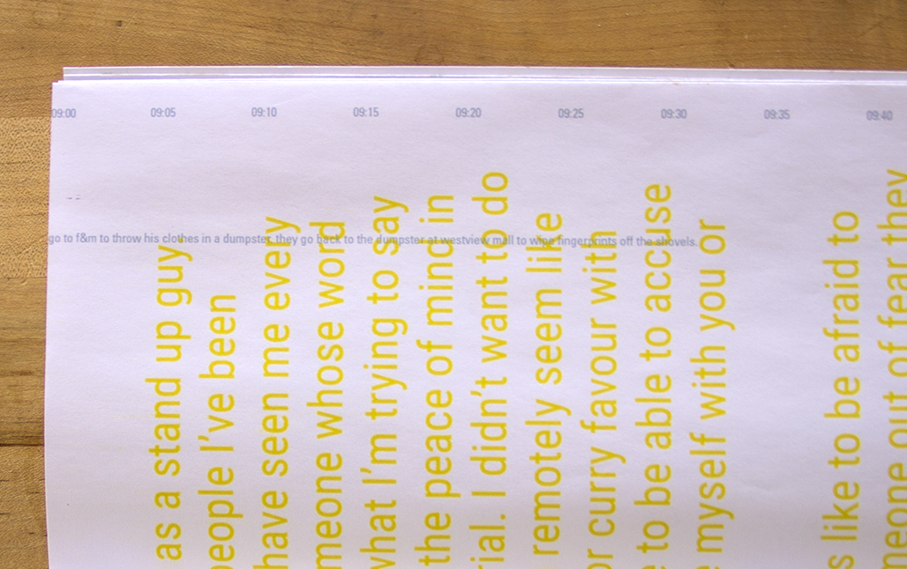
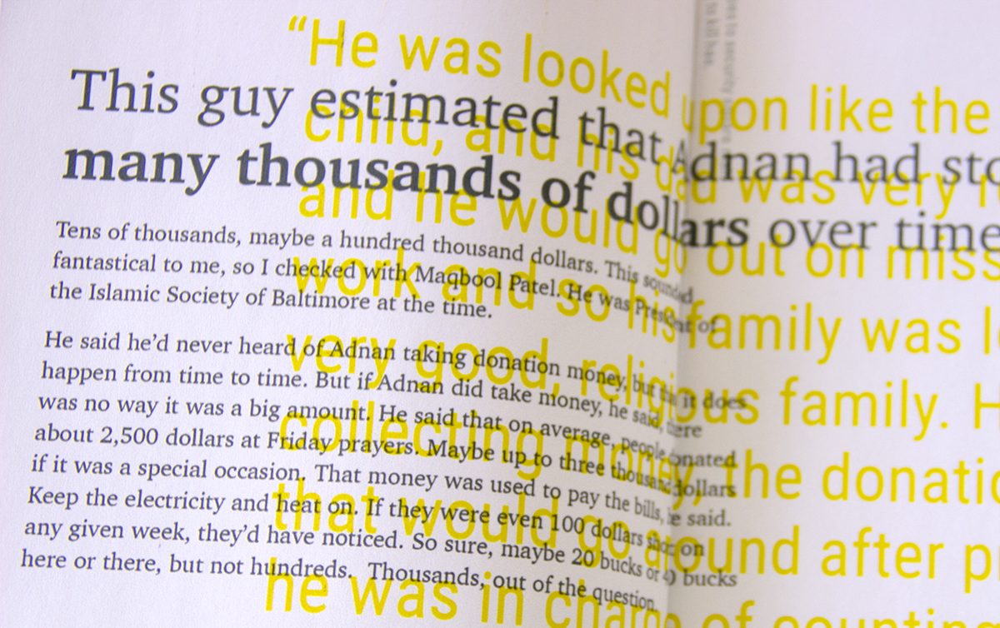
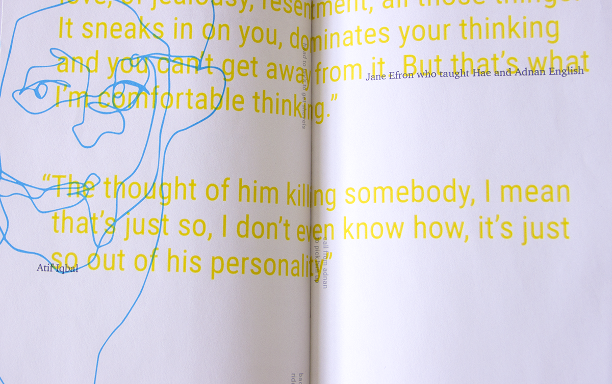
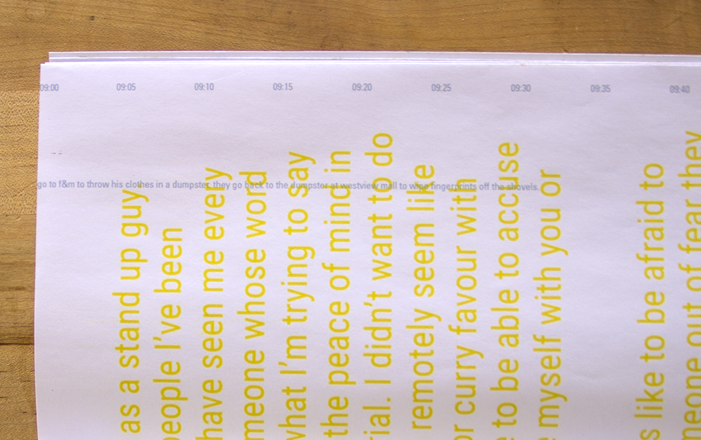
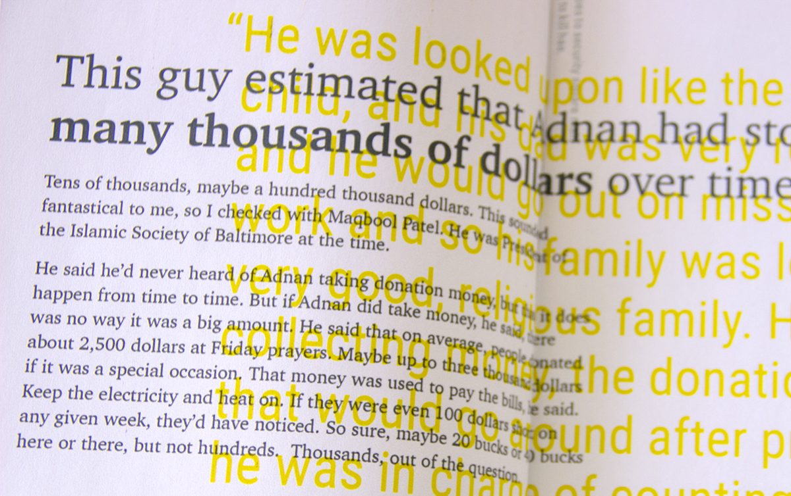
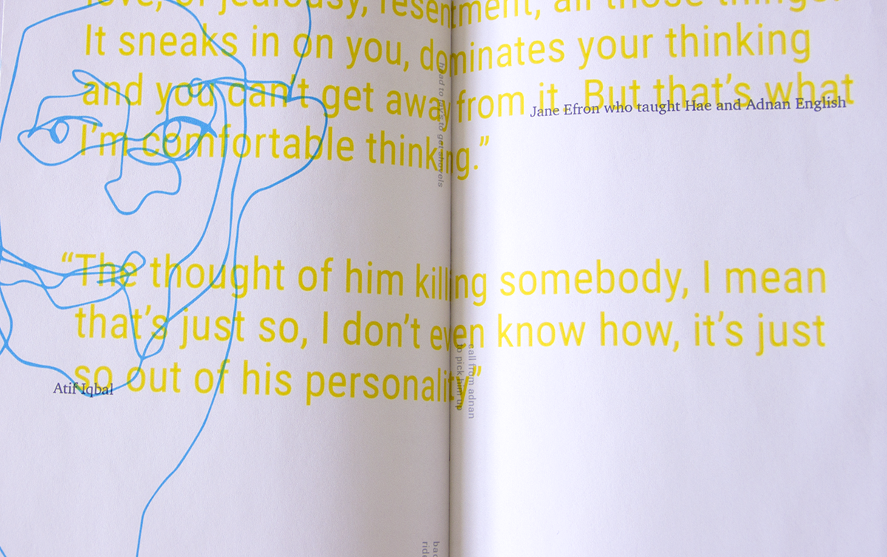

A visual narrative that aims to detangale fact and fiction
Season one of the podcast Serial examines the disappearance and murder of Hae Min Lee and the conviction of her ex–boyfriend Adnan Syed. The book translates the various voices and timelines of the story into a digestable form.
There are various stories and narratives represented in the book: the accounts from Adnan, court proceedings, classmates's recollections of the day Hae's disappeared, anecdotes from community members. Each voice claims to be the authority; it becomes difficult to seperate fact from fiction.
<< back 




